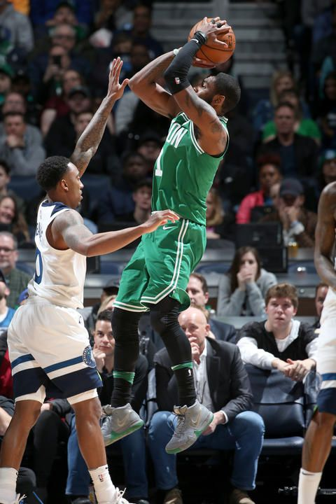
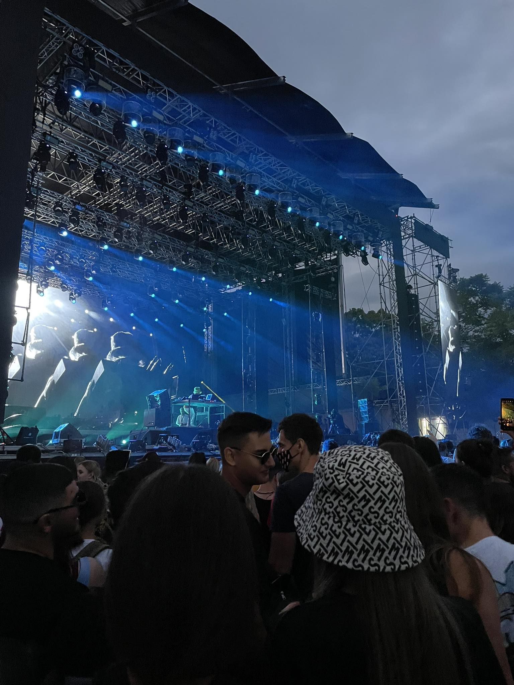
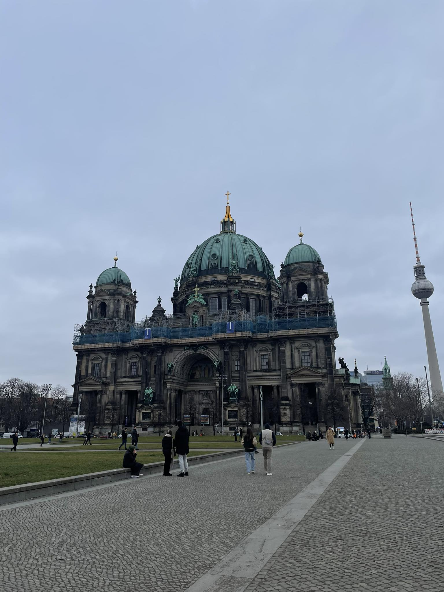

Поголемиот дел од моето слободно време го поминувам спортувајќи. Трчањето и кошарката се моите омилени спортови. Трчањето ме возбудува, преку трчањето ги тестирам моите граници на издржливост додека пак кошарката го буди мојот натпреварувачки дух.
Слушањето музика е интересен интерес кој го надминува времето и ме поврзува со моите емоции. Додека пак посетувањето на фестивали ми нуди уникатно искуство, од силните ритмови до енергичните настапи, фестивалите пружаат силно поврзување со музичката заедница и создаваат незаборавни моменти исполнети со радост и восхит.
Истражување на нови земји, доживување на различни култури и создавање на доживотни спомени се неколку од причините поради кои обожавам да патувам низ светот. Патувањата ни ги отвора очите кон убавината на непознатите пејзажи, нè поврзува со луѓе од сите сфери на животот и ни ги исполнува срцата со бескрајна инспирација.
